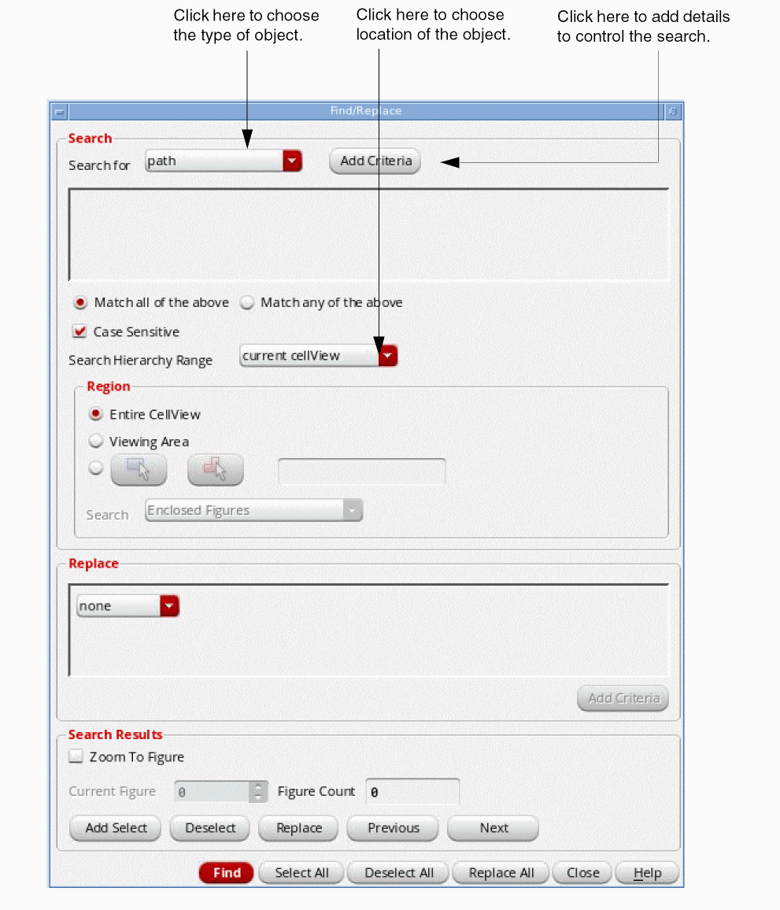
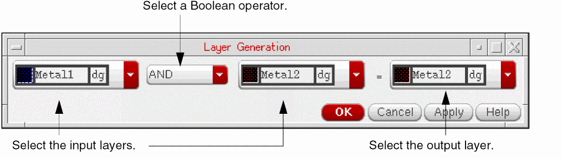
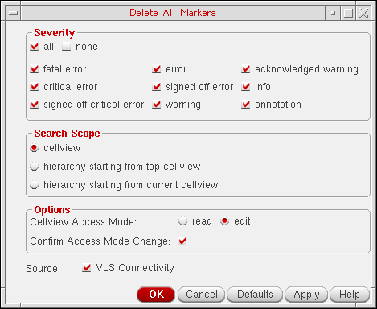

4
Using Design Tools
This chapter contains these topics:
- Using Find/Replace
- Using Area and Density Calculator
- Using Rulers
- Re-mastering Instance Views
- Creating Pins from Labels
- Using the Tap Command
- Changing Objects on a Layer
- Generating Abstracts
- Working with Markers
- Working with Markers
- Pad Opening Info Command
Using Find/Replace
The command lets you search for objects with specific attributes or property values. See the Objects Criteria Table for a list of conditions and logic to use when searching for objects.
| Support for Objects | |
|
You can search for ROD names on labels, paths, polygons, rectangles, any shape and text display objects. |
|
This topic covers the following:
- Specifying the Search Criteria
- Finding Objects
- Finding Objects in Instances
- Finding Instances
- Replacing Instances
- Finding and Replacing Text of Labels
Specifying the Search Criteria
In the text field where you specify the search text, you can make a text entry or choose from a cyclic field, depending on the type of value you want to search for.
To search for multiple objects, you can use * and . wild card characters. The character * searches for the entry you made, with any number of unspecified characters before, after, and/or between any characters in your entry. The character . searches for the entry you made, with any single unspecified character at any position in your entry. For example, to search for all instances that have PInst at the beginning of their names, type “PInst*“. However, if you want to search for all instances that have Inst in their names irrespective of the first character, type “.Inst*“.
PInst1 and PInst2 out of all the instances that have PInst at the beginning of their names, specifying the search criterion as one of the following does not give the desired results:Finding Objects
-
Choose Tools – Find/Replace [
Shift-s].
The Find/Replace Form appears. - In the Search for cyclic field, choose the type of object you want to find, and the location in which you want to search in the Search Hierarchy Range field.
-
Click Add Criteria to add Boolean expressions, which control the search (search criteria).
. -
Set the search criteria by doing the following:
a. click the first field to choose the type of value to search for.
b. click the Boolean operator field to choose the operator you want: equal (==) or not equal (!=), and other operators depending upon the criteria you select.
c. Type or choose the value you want. (see Specifying the Search Criteria)

-
Click Apply.
The layout editor highlights all of the objects it finds matching the specified search criteria and puts them in a search group. The first or current object in the group is highlighted in a different color. - Click Previous or Next to search through the group.
- Click Add Select to select the current object in the search group.
- Click Select All to select all of the highlighted objects.
- When you are finished selecting objects, click Close.
Finding Objects in Instances
To search for objects or instances inside other instances,
-
Choose Tools – Find/Replace [
Shift-s].
The Find/Replace Form appears. - In the Search for cyclic field choose the type of object you want to find.
- Click Add Criteria to further define the search.
- Specify the Search Hierarchy Range.
-
Click Apply.
During the search, instances are highlighted as they are found.
Finding Instances
To search for instances in the current cellview,
-
Choose Tools – Find/Replace [
Shift-s].
The Find/Replace Form appears. - In the Search for cyclic field, choose instance.
- Click Add Criteria to add search criteria.
- Click the first field in the criterion line to search for the instance by one of the following:
- Type the cell or instance name. (see Specifying the Search Criteria)
- Click Add Criteria to further define the search.
-
Click Apply.
The layout editor highlights all the instances in the cellview that match the criteria you entered.
Replacing Instances
To replace instances of one master cell with instances of a different master cell,
- Find the required instances by following the steps described in Finding Instances.
- In the Replace cyclic field, choose cell name.
-
Type the name of the new master cell.
-
Click Apply.
The layout editor highlights all the instances of the master cell. - To replace only one instance of the cell, click Previous or Next until the instance you want is highlighted.
- To replace one instance of the cell, click the Replace button to replace the top cell in the search stack.
- To replace all instances of the cell, click the Replace All button to replace all instances of the highlighted cell.
Finding and Replacing Text of Labels
To search and replace labels in the current cellview,
-
Choose Tools – Find/Replace [
Shift-s].
The Find/Replace Form appears. - In the Search for cyclic field, choose label.
- Click Add Criteria to add search criteria.
- The first field in the criterion line shows text by default.
-
To search for all the labels in the cellview, type
*in the text field. You can specify multiple criteria to search for the required labels. -
Click Apply.
The layout editor highlights all the labels in the cellview. - In the Replace cyclic field, choose text.
-
In the second cyclic field, choose one of the following:
- Change text: Select this option and specify the text to replace the label text of all the labels matching the search criteria.
- Add Prefix: Select this option and specify the text to be prefixed to all the labels matching the search criteria.
-
Add Suffix: Select this option and specify the text to be added at the end of all the labels matching the search criteria.
- To replace only one label, click Previous or Next until the label you want is highlighted and then click Replace.
-
To replace all the highlighted labels, click Replace All.
To perform this operation across different hierarchy levels, select current to bottom or current to stop level or current to user level instead of current cellview in the Search Hierarchy Range field.
Using Area and Density Calculator
The Area and Density Calculator command lets you calculate the of the shapes on specified layers within a region. The feature enables you to calculate the area of metal lines, resistor networks, MOS devices placed together. You can also calculate the layer density in a specified region.
Area is defined as the total area of the specified layers within the region that you select. Density is defined as the total area divided by the area of the region the you specify.
To calculate the area and density of a region,
-
Choose Tools – Area and Density Calculator.
This opens the Area and Density Calculator Form.
You can specify the object, layer, hierarchy range and region for which you want to calculate the in the Area and Density Calculator form. - In the Object field, select the object for which you want to calculate the area. You can select All (all objects) or Selected (only selected objects will be considered for area calculation).
- In the Layer field, you select a single layer or multiple layers for area calculation.
- In the Hierarchy Range field, you specify the search depth. You can select the search depth current cellView, current to bottom, current to stop level, or current to user level.
-
In the Region section, select the region for which you want to calculate the area and density. You can select the Entire CellView, Viewing Area, A Selected Boundary, or Draw a Rectangle Region or Draw a Polygon Region on the Canvas.
The area and density calculation report is diplayed.
You can also use the SKILL function leComputeAreaDensity for this feature.
Using Rulers
The Create Measurement command lets you create rulers to measure objects and distances between objects in a cellview.
This topic covers the following:
Creating Rulers
The Create Measurement command creates a ruler object, which lets you measure objects or the distance between objects. You can also use the command to measure distances between two edges or vertices.
You can create transient or persistent rulers in the layout editor. A transient ruler cannot be saved. However, a persistent ruler can be saved. By default, persistent rulers are created in the layout editor. If you want to create transient rulers, deselect Create Measurement as a savable object option on the General tab of the Create Measurement form. To open the Create Slot Form, choose Tools – Create Measurement, or press k and then press F3.
The Create Measurement command has the following three modes:
Single-segment
Single-segment is the default measurement mode for the Create Measurement command. In this mode, when you add two points on the canvas, the corresponding measurement is displayed on the canvas. If the Repeat Commands is on, the Create Measurement command continues, else the command completes.
By default, the placement of the measurement is calculated automatically. You can view the placement when you drag the pointer. You have the flexibility to specify the location of the measurement segment, either before adding the second point or after adding the second point.
If you want to specify the location of the measurement segment before the second point is added on the canvas, move the pointer to the desired location, and then press Ctrl and click the middle mouse button. The location of the measurement segment is now fixed. You can then select the second point. If you have selected multi-segment measurement mode, the multi-segment measurement segment is drawn at the location where you press Ctrl and click the middle mouse button.
If you want to specify the location of the measurement segment after the second point is added on the canvas, press Ctrl and click. When you move the pointer, the measurement segment will also move. Click to fix the location of the measurement segment. The Create Measurement command now completes.
Edge
The edge measurement mode allows you to click an edge of an object and a measurement is drawn with the two vertices as the two ends. The vertex of the edge closest to the point where you click is considered as the first vertex, and the other edge is considered as the second vertex. When you move the pointer on the canvas, the measurement also moves. You then click the canvas to place the measurement at the desired location. The first click lets you select the edge and the second click lets you place the measurement on the canvas. A double-click lets you create and place the edge measurement at the edge itself.
The edge measurement mode allows you to measure the width of an edge of an object. The first click lets you select the edge and the second click lets you place the measurement on the canvas. A double-click lets you create and place the edge measurement at the edge itself. When pointer snaps to a vertex, the edges connected to the vertex get measured.
Multiple
There are two ways in which you can create multi-segment measurements:
-
Click Multi-segment Ruler on the General tab of the Create Measurement form. In the multi-segment mode, a segment is added to the ruler, with every click the canvas. If you double-click or press
Enter, the last point is added to the ruler and the Create Measurement command completes. -
You can also create multi-segment measurement while you are in the single-segment measurement mode. In the single-segment mode, after the first click, press
Shiftand then click to add a point to the measurement. PressShiftand click to add subsequent points to the measurement. If you click or pressEnter, the last point is added to the ruler and the Create Measurement command completes.
Similar to single-segment mode, in multi-segment mode you can place the measurement segment by using the Ctrl and click combination.
The table below summarizes the mouse/key bindings that are in effect during the Create Measurement command for the three measurement modes, single-segment, edge, and multi-segment:
(ICADVM20.1 Virtuoso RF Solution Only) For curved shapes. the measurement is drawn at a tangent to the point where you have snapped as shown in the figure below.
You can create a ruler by using one of the following methods:
You can also create a ruler by using a combination of the above two methods – define the start or the end point with smart snapping on, and define the other point with smart snapping off.
Creating Rulers with Smart Snapping Off
In the Smart snapping off mode, the ruler object follows the
To create a ruler when Smart Snapping is off:
- Choose Tools – Create Measurement.
-
Right-click in the design display area.
The Ruler Context-Sensitive Menu appears.

- Choose Smart snapping off.
- Choose Options – Editor. This opens the Layout Editor Options Form.
-
Press
F3or select Options from the Ruler Context-Sensitive Menu.
This opens the Create Measurement Form.
-
Click in the design display area to specify the start point.
After creating the start point of the ruler, you can move it around in the design display area depending on the specified Snap Mode. -
Click again to specify the end point of the ruler.
If Gravity On is selected in the Layout Editor Options form, you can snap the ruler to the required target edge or point.
If you are creating a multi-segment ruler, click at the end of each segment and double-click to define the end point of the ruler.
-
Press
Escto finish creating rulers.
Creating Rulers with Snapping On
To quickly define the start and end points of a ruler or the various click points in the case of a multi-segment ruler without the need for zooming in to the exact click locations, select the snap target (edges, points, or both). This identifies objects in vicinity of the pointer and attaches to them.
When snapping is selected (edges, points, or both), the ruler object is created with the following features:
- Snap to vertex, nexus, edge midpoint, edge, or centerline.
- Cycle over potential targets within a specified distance from the pointer.
- Cycle over orthogonal end targets prior to parallel or non-orthogonal ones.
-
Snap to targets within an hierarchy, in EIP mode, and inside a group.
Rulers at level 0 remain visible when you EIP to any other hierarchical level. - Snap to non-orthogonal edges as well as edges and vertices of instance boundary.
By default, Snap to Edges is selected in the Ruler Context-Sensitive Menu. You can select any other smart snapping option from the Ruler Context-Sensitive Menu.
To create a ruler when snapping is on:
- Choose Tools – Create Measurement.
-
Specify a value in the Aperture field on the General tab of the Create Measurement form.
Aperture defines the distance between the pointer and the target object. The following figure shows the distance of the pointer from an edge at the distance at which the edge is highlighted. - Specify a value in the Depth field on the General tab of the Create Measurement form if your design is hierarchical to enable the pointer to snap to objects within the hierarchy.
- In the Display Options Form, adjust the display level for displaying targets within the hierarchy.
-
Press
F3or select Options on the Ruler context-sensitive menu.
This opens the Create Measurement Form.
- Select the Savable Measurement checkbox if you want to create a persistent ruler.
- Select the Multiple from the Segment Mode drop-down to create a ruler with more than one line segment.
- Choose a value from the Snap Target list.
- To specify the ruler and snap target visualization settings, use the options in the Display Options section of the form.
-
Select the snapping options in the Snap Mode and Snap Target field.
- Click Hide.
-
Move the pointer in the design display area.
A vertex, nexus, edge midpoint, edge, or centerline highlights dynamically based on the snapping option selected from the Ruler Context-Sensitive Menu or Create Measurement form. -
Click near one of the highlighted targets.
The pointer snaps to the highlighted target. -
Press the
Spacebarkey if there are multiple potential targets within the configured Aperture distance from the pointer.
The highlight cycles over these targets. With eachSpacebarkey press, the next possible target within the Aperture distance from the pointer is highlighted. You can highlight up to five targets in the proximity of the pointer by pressing theSpacebarkey in succession. -
Click to snap the pointer to the highlighted target.
-
If the target is an edge or a center line, the pointer drops orthogonally from the point of click to the target edge or center line, respectively. In case of points, the pointer snaps to the target vertex, nexus, or edge midpoint. If the selected snapping option is Mid Point of Distance, click twice for the pointer to snap to the starting point of the smart ruler.If you select Mid Point of Distance on the context-sensitive menu, by default, the Snap Target to Edges option appears selected on the context-sensitive menu.Click to snap the pointer to that edge. After you define the two targets, the pointer immediately snaps to the midpoint of the distance between the two targets on the selected edges.
-
If the target is an edge or a center line, the pointer drops orthogonally from the point of click to the target edge or center line, respectively. In case of points, the pointer snaps to the target vertex, nexus, or edge midpoint. If the selected snapping option is Mid Point of Distance, click twice for the pointer to snap to the starting point of the smart ruler.
-
Press
Escto finish creating rulers.
| Support for Objects | |
|
Snapping of rulers to blockages is supported. All snapping modes, except snapping to Nexus, are supported for blockages. |
|
Saving Rulers
By default, rulers are saved when you save the cellview. If you do not want to save the rulers, ensure that the Savable Measurement option on the Create Measurement form is not selected.
Deleting Rulers
You can clear all rulers from the design window by selecting Tools – Clear All Measurements, or from all levels of the hierarchy by selecting Tools – Clear All Measurements In Hierarchy. This will delete all persistent and transient rulers.
Re-mastering Instance Views
The Re-Master Instances command is capable of hierarchically re-mastering cellviews based on the view names, cell names, and the library in which they reside. For example, re-mastering the abstract views with layout views directly before translating the final design to Stream format provides optimal performance. Replacing cellviews before editing the design can add unnecessary complexity to the design for routing and editing purposes.
You have a number options for the re-mastering cellviews. By leaving text fields blank in the form, entire libraries and cellviews can be searched for matching cellviews and view names. The * wild card can be used to replace any number of characters prior to or following the asterisk. See Re-Mastering Examples for more information.
Replacing Abstract Views with Layout Views
You can use the File – Discard Edits command to restore data to the last saved design in the event you make an error when replacing data. However, due to the extensive changes available when using this command, making a backup copy of your design to guard against errors when replacing data is recommended.
To search and replace instance abstract views with layout views,
-
Open the cellview in which you want to re-master instances.
Instances are re-mastered only in the current open cellview. -
Choose Tools – Remaster Instances.
The Remaster Instances Form appears. -
In the Search for group box, do one of the following:
- In the Library field, type the name of the library that contains the abstract cellviews you want to re-master.
-
In the CellName field, type the name of the block or cellview that contains the cellviews you want to re-master.
If the CellName field is left blank, the Remaster Instances command searches throughout the entire library in the Update to group box for matching cellview names. - In the ViewName field, type the name of the view (abstract) to be re-mastered.
-
In the Update to group box, do the following:You can use the Browse button to open the Library Browser and specify an Update to library name. The Library Browser lets you look though the libraries specified in your cds.lib file and set the library, cell, and view names for the form.
- In the Library field, type the name of the library that contains the layout cellviews.
-
In the CellName field, type the name of the block or cellview that contains the layout cellviews.
If the CellName field is left blank, all cellviews that have matching cellview names specified by ViewName and Library name in the Update to group box are re-mastered. - In the ViewName field, type the name of the view (layout) that will re-master the current abstract cellviews specified by the Search for library.
-
(Optional) Turn on Check Terminals to check all corresponding cellviews for matching or a subset of matching instTerm information.
For more information, see Checking Terminals. -
(Optional) Choose File – Summary to check the results of the Remaster Instance command.
In the Instance Statistics group box of the file, the master cellview name, view name, and library are listed for each cellview. Verify the results of the executed command by checking the master cellview names and views names for the specified cellview.
Re-Mastering Examples
Shown below are some of the more common types of searches and re-mastering of cellviews.
Checking Terminals
The Check Terminals option checks instTerms of cellviews for matching or a subset of matching instTerms. When Check Terminals is on, and the instTerms of the cellview in the Search for field are a subset of the instTerms of the cellview in the Update to field, or they are equivalent, the cellviews will be re-mastered.
Terminals expose a net up to the next level of the hierarchy. For example, a master might have 10 nets and 4 terminals (associated with 4 of the nets).
When you create an instance of a master, it may have objects called instTerms associated with it. These instTerms map terminals in the instance’s master to nets of the cellview in which the instance has been placed. The XL layout editor (or the Pick and Place command) creates and assigns these instTerms automatically. To expose these nets to the next level of the hierarchy, you create terminals for the nets, which are then mapped using instTerms at the next level.
For example, consider the instance in the following figure, which contains five pins: two on net A, two on net B, and one on net C. These nets need to be available at the next level of the hierarchy, so you create three terminals named A, B, and C.

Creating Pins from Labels
The Tools – Create Pins From Labels command lets you create pins from the labels and text displays in your layout cellview. You can specify the pin dimensions and the layer on which each pin is created. The generated pins are centered on the origin of the label or text display from which they are derived, and have terminal names matching those on the corresponding labels or text displays.
If a pin already exists for a selected label or text display, no new label is created for that object. The pin and object are not attached to each other. If you move the pin, the corresponding label or text display do not follow. To attach an object to the pin, see Attaching and Detaching Objects.
To create a pin from a label or text display:
- In the layout canvas, select the labels or text displays from which you want to create pins.
-
Choose Tools – Create Pins From Labels.
The Create Pins From Labels Form opens.
- Use Objects Within to specify whether to create pins at the top level of the Cellview or inside the Selected Instances.
- Choose the Object Type to create pins from: Label, Text Displays, or Both.
- Choose whether to create pins for All the Objects of the specified type or only those that are currently Selected.
-
In the Pin Layer cyclic field, choose the layers on which each pin is to be created.
If you selected labels on more than one layer, choose the appropriate pin layer for each label layer from the list of available layers. - Type in the Width and Length of pins you require.
-
Click OK or Apply.
The pins are created in the canvas and placed at the center of the labels.
Using the Tap Command
There are two different Tap commands, the Tap command on the Tools – Tap menu and the Tap group box in the Layout Editor Options form.
Using the Tap Command on the Tools Menu
This Tap command accesses information from the following objects: paths, wires, rectangles, polygons, circles, ellipses, donuts, microwave objects, blockages, instances, vias, rows, labels and text displays. The Tap Form description explains how the Tap command affects the current layer, net, attributes, and command when each type of object is tapped.
To use the Tools – Tap Command
- Choose Tools – Tap.
-
Press
F3to open the form.
The Tap Form appears. - Select the required Tap Types.
-
Click an object.
The specified attributes will be picked from the selected object. -
Choose a create command.
The create form is populated with the information obtained from the original object you have tapped and seeds the form with the information you have selected in the Tap form.
Using the Tap Section in the Layout Editor Options Form
Wire Auto Tap, Shape Auto Tap, and Tap Purpose List are automatic during the creation of certain objects when the Tap fields are selected in the Layout Editor Options form. They are used during certain create commands when you want to automatically tap an existing object that is located at the first point of your new object.
Selecting Shape enables Auto Tap for rectangles, polygons, paths, circles, ellipses, and donuts. Selecting Wire enables Auto Tap for wires.
When tapping a wire or path, you can tap the LPP, extension type, and width of the wire. When using the XL layout editor, the net name and constraint group is also tapped.
To tap specific layer purposes, create a prioritized list through the Tap Purpose List on the Layout Editor Options form or through the environment variables useTapPurposeList and tapPurposeList. The default purpose is drawing, which can be overridden through Tap Purpose List.
For example, if the Tap Purpose List is defined as:
-
It sets the default purpose for
metal1asdrawing. -
Tapping an object on the LPP
metal1netchanges the active layer tometal1net.
If Select from Overlaps is on, the Choose object to tap from form appears if the clicked point has overlapping objects.
If Select from Overlaps is off, the object with an edge closest to the selected point is tapped. Also, the shape to be tapped is highlighted. You can use the space bar to toggle the highlight for shapes under the pointer. The layer information of the shape is displayed on the Selection toolbar.
For detailed description of these options on the Layout Editor Options form, see the Tap section.
If you click an area in the design that has overlapping objects and start the Tap command, you can choose the object you want to tap by selecting it from the Choose Object to Tap form.
Tap command should not be performed.Changing Objects on a Layer
The Layer Generation command lets you perform Boolean edits on layers, including resizing and merging objects on a layer. Layer Generation edits copies of the objects; the original objects are unchanged.
Making Changes to Objects on Layers
To enlarge copies of selected objects:
- Select the objects you want to resize.
- Choose Tools – Layer Generation.
-
Fill out the Layer Generation Form as shown below.
-
Click OK.
Copies of the selected objects are enlarged.
How Sizing Converts Objects to Polygons
When you resize an object such as a path by using Size, the object is converted to a polygon. When you use Layer Generation Form, the original path remains and the new object on the new layer is converted to a rectangle or a polygon.
For example, if you enlarge a path with Size, the resulting object is a polygon.
Making Boolean Edits by Layer
You can perform Boolean logical operations on objects on one or two layers. You edit copies of the objects, so the originals are unchanged.
- Select the objects you want to edit.
-
Choose Tools – Layer Generation.
The Layer Generation Form opens. -
Choose the layers you want to edit and the Boolean operator you want to use.
 -
Click OK.
The following figure shows the results of different Boolean operations.
Generating Abstracts
You can create an abstract of the open design by running the Tools - Abstract Generation command. This opens the Virtuoso Abstract Generator tool. For information about how to set different options in this tool to obtain the desired abstract, see the Virtuoso Abstract Generator User Guide. You can use abstracts for place and routing.
Working with Markers
To get information about a marker, use these commands:
- Verify – Markers – Explain displays the reason for the error or warning marker in a text window
- Verify – Markers – Find searches for and highlights each error or warning marker
After you get the information you need, you can delete the marker using these commands
- Verify – Markers – Delete removes a specific marker
- Verify – Markers– Delete All removes all markers
Explaining Markers
You select markers either before or after you choose Verify – Markers – Explain.
- Click the marker or draw a selection rectangle around multiple markers.
-
Choose Verify – Markers – Explain.
The Marker Text Window appears and displays information about the error. -
Continue selecting markers you want explanations for.
The text scrolls in the marker text window so you can see it. -
When you are finished viewing the errors, press
Escapeto end the command. - You can correct the errors and rerun the verification command.
Finding Markers
Verify – Markers – Find searches for and highlights each error or warning marker in a layout to help you correct errors. You can search for markers anywhere in the design hierarchy. You can also display the previous or next marker.
-
Choose Verify – Markers – Find.
The Find Marker Form appears. - Change the options on the form as desired.
-
Click Apply.
The first error or warning marker is highlighted and the reason for the marker is displayed in the marker text window. - To find the next marker, click Next on the form, or to look at the previous marker, click Previous on the form. Then check the marker text window for the reason for the marker.
- To delete the current marker, click Delete.
geHiCommonFindMarker() in the Command Interpreter Window (CIW). For more information on this command, see the Virtuoso Schematic Editor User Guide.Deleting Individual Markers
To delete individual markers in the design window,
- Indicate which marker you want to delete by doing one of the following:
-
Choose Verify – Markers – Delete.
If you pressF3, the Delete Marker Form appears.

-
Select the Cellview Access Mode.
If you set Cellview Access Mode to edit, select the Confirm Access Mode Change check box, and then point at a marker to delete it, the Delete Marker dialog box appears for you to confirm opening the selected cellviews in edit mode.
Select the ones that you want to open in edit mode and click OK. If you do not want to open the cellviews in the edit mode, select None and click OK.
If you set the Cellview Access Mode to read (the Confirm Access Mode Change check box is disabled) and then point at a marker to delete it, the marker is deleted and the cellview remains in read mode. - Click Cancel in the Delete Marker form to finish deleting the required markers.
Deleting All Markers
To delete all markers in the design window,
-
Choose Verify – Markers – Delete All.
The Delete All Markers Form opens.
 - Select the Severity types, Search Scope, and the Source.
- In the Options section, select the Cellview Access Mode.
-
Click OK or Apply.
Clicking OK closes the form.
If you set Cellview Access Mode to edit, select the Confirm Access Mode Change check box, and then click OK or Apply, the Delete All Markers dialog box appears for you to confirm opening the selected cellviews in edit mode.
Select the ones that you want to open in edit mode and click OK. If you do not want to open the cellviews in the edit mode, select None and click OK.
If you set the Cellview Access Mode to read (the Confirm Access Mode Change check box is disabled) and click OK or Apply, the markers are deleted and the cellview remains in read mode.
Pad Opening Info Command
In hierarchical designs, a pad shape and its corresponding pad label might not be at the same hierarchical level. The Tools – Pad Opening Info command helps you find pad shapes at lower levels of your hierarchical cellview, generate reports and labels for the pad shapes that are found, and promote the generated labels to the top level of the cellview. This command is supported for all shapes. except lables and text displays.
- Generating a Standard Report
- Generating a Customized Report
- Generating Labels for Pads
- Promoting Labels to the Top Level
Generating a Standard Report
To generate a standard report containing information on the pad shapes found in all or part of a hierarchical cellview:
- Open a hierarchical cellview that contains bond pad shapes.
-
Choose Tools – Pad Opening Info from the Layout menu bar.
The Pad Opening Info Form appears. -
Click the Generate Report radio button at the top of the form.
The Reporting options are shown at the bottom of the form.
-
Specify the Search Criteria for the pad shapes and labels you are interested in.
- Select the appropriate Bond Pad Layer/Purpose to search for pad shapes.
- Set the Search Depth to limit the number of hierarchy levels to be searched. For example, specifying 5 means that levels 0 through 5 are searched.
- Set the X and Y Dimensions for the pad shapes you are interested in, if required.
- Use Create Rect or Create Polygon to limit the region in the cellview that is searched if required. Either draw the region you require in the canvas or edit the coordinates manually in the field.
-
Specify the Label/Name Layer/Purpose and Search Depth to search for existing labels. For example, the settings above search LPP
text drwat level 2 only.
-
Specify the coordinates for the first pad to be generated by clicking the 1st PAD coords button and then clicking on the desired location in the canvas.
The coordinates are entered in the field automatically. You can edit them manually if required. -
Choose whether subsequent pad shapes should be labeled in the Clockwise or Counter Clockwise direction.
-
Select the Make Standard Report check box and use the Browse button to specify the directory and file name for the report file.
-
Click OK or Apply at the bottom of the form.
The report file is displayed.
If the design contains duplicate pads, the duplicate pads are displayed in the report only once, as shown below.
Generating a Customized Report
To create a customized report containing information on the pad shapes found in all or part of a hierarchical cellview,
- Open a hierarchical cellview that contains bond pad shapes.
-
Choose Tools – Pad Opening Info from the Layout menu bar.
The Pad Opening Info Form appears. -
Make sure you are in Generate Report mode.
The Reporting options are shown at the bottom of the form. -
Set the Search and Sort criteria as required.
See Generating a Standard Report steps 4 through 6 for more information. -
Choose Make Customized Report in the Reporting group box at the bottom of the form.
The Add, Del, and Edit buttons are enabled. -
Click the Add button to create a customized report. The Create Encore Report Form is displayed.

-
Specify the headers to be included in the report by selecting an option from the Headers list on the left side and clicking the >> button. The selected header name is moved to the right box.
To remove a header from the report, select the header in the right hand list and click <<. -
Specify the columns to be included in report by selecting an option from the Columns list on the left side and clicking the >> button. The selected header name is displayed in the right box.
To remove a column from the report, select the column label in the right list and click <<.
-
Specify where you want the report to be saved in the File Path field. You can use the Browse button to navigate to the desired location.
For information on how to filter the data shown in your customized report, see Setting Filters for a Customized Report. -
Click OK
The custom report report is generated and saved to the specified location on disk.
Setting Filters for a Customized Report
You use the Pad Opening Info: Filter form to filter the data shown in a customized report. To do this:
-
Click Set Filter in the Create Encore Report Form.
The Pad Opening Info: Filter form is displayed.

- To enable a filtering selection, click the check box on the left and specify the mode by choosing either Pad Opening Name, X, Y, or Area from the first drop-down list.
-
Choose the appropriate operator from the second drop-down list.
For example, to specify the criterion equal to the content in the left field, select the == operator from the drop-down list.
The other valid operators in Pad Opening Name are !=, contains, and doesn’t contain.
For X, Y, and Area, the valid operators are: ==, !=, <, <=, >, >=. - Specify the required values in the blank field.
-
Select the operator for logical operation to the fields below from the final drop-down list. The valid operators for logical operation are “and” and “or”.
-
Click OK.
The filters are set for the customized report and displayed in the Filter field in the Create Encore Report Form.
Generating Labels for Pads
Use Generate Labels mode to specify what label names are generated and how they will be drawn in the canvas.
- Open a hierarchical cellview that contains bond pads.
-
Choose Tools – Pad Opening Info from the Layout menu bar.
The Pad Opening Info Form is displayed. -
Click the Generate Labels radio button at the top of the form.
-
Set the Search and Sort criteria as required.
See Generating a Standard Report steps 4 through 6 for more information. -
In the Label Control group box at the bottom of the form.
-
Set the pattern for the pad naming in the Label (Pattern) field.
The label names will include the label prefix and the pad numbers (for example, PAD<1>, PAD<2>, and so on) or specify a file from which the names are to be read. - Select the appropriate Layer/Purpose. This is the layer the label will be printed on.
- Set the Font, Height, and Justification for the labels as required.
For more information on the available options, see Label Control. -
Set the pattern for the pad naming in the Label (Pattern) field.
- If required, click Delete Bond Pad Labels to remove all of the labels from the top level.
-
Click Apply.
You can now zoom in to any pad and see the label information placed on the pad opening.
Promoting Labels to the Top Level
Use Promote Label to Top mode to promote generated labels to the top level of the cellview. You can also control how the labels are drawn on the canvas and whether the corresponding lower-level labels should be removed.
- Open a hierarchical cellview that contains bond pads.
-
Choose the Tools – Pad Opening Info from the Layout menu bar.
The Pad Opening Info Form is displayed. -
Click the Promote Label to Top radio button at the top of the form.
-
Set the Search and Sort criteria as required.
See Generating a Standard Report steps 4 through 6 for more information. -
In the Promote Label group box at the bottom of the form:
- Select the appropriate Layer/Purpose. This is the layer the label will be printed on.
- Set the Font, Height, and Justification for the labels as required.
- Choose whether to Remove Original Labels.
For more information on the available options, see Promote Label. -
Click Apply.
The required labels are promoted to the top level of the cellview.
Return to top